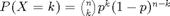
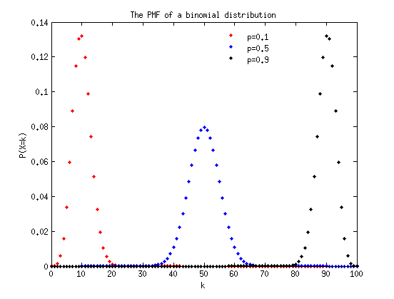
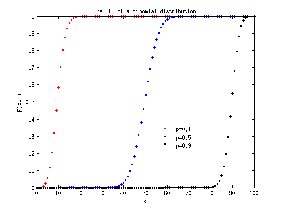
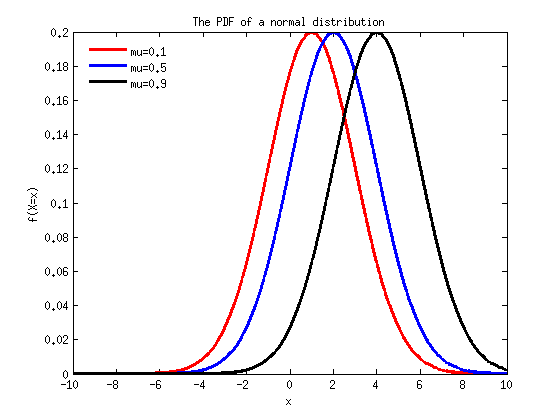
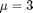
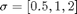
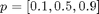

Lab 3, Discrete, continouse distribution. (Due on 11:59 PM, Feb 17, 2015)
Any distribution can be plotted with Matlab®. In Lab 3, we will show the impact of different controling parameters on several discrete and continouse distributions we learnt so far. All the distributions that are available in Matlab : http://www.mathworks.com/help/stats/binopdf.html
Contents
Plot the PMF of a binomial distribution by varying p;
Step 1. define neccessary variables(Matlab variables) to code for the binomial PMF formula .
n = 100; % the n parameter in the PMF. p = [0.1, 0.5, 0.9];% the varying p parameter in the PMF. ks = 0:100; % the value X can take.
Step 2. In each iteration of the for loop, calculate the corresponding P according to the binomial PMF formula. Draw a PMF on a figure.
fig1 = figure; % create a figure to draw on. linestyle = {'r.', 'b.','k.'}; for i=1:3 P = binopdf(ks,n,p(i)); % Directly call the binopdf() function to calculate P(X=k) returns a vector of probabilities with the same length as ks plot(ks, P, linestyle{i}, 'linewidth', 3); % .r means red dots. -r means red line. hold on; % hold on for other plotting. end title('The PMF of a binomial distribution'); xlabel('k'); ylabel('P(X=k)'); legend('p=0.1','p=0.5', 'p=0.9','Location','best'); legend('boxoff');
Plot the (Cumulative) Distribution Function of a binomial distribution by varying p;
Step 1. define neccessary variables(Matlab variables) would be used.
n = 100; % the n parameter in the PMF. p = [0.1, 0.5, 0.9];% the varying p parameter in the PMF. ks = 0:100; % the value X can take.
Step 2. In each iteration of the for loop, call the binocdf() function to calculate CDF. Draw a CDF on a figure.
fig1 = figure; % create a figure to draw on. linestyle = {'r.', 'b.','k.'}; for i=1:3 P = binocdf(ks,n,p(i)); plot(ks, P, linestyle{i}, 'linewidth', 3); hold on; % hold on for other plotting. end title('The CDF of a binomial distribution'); xlabel('k'); ylabel('F(X=k)'); legend('p=0.1','p=0.5', 'p=0.9','Location','best'); legend('boxoff');
Plot the PDF of a nomal distribution with varying and a fixed
With the similar steps as for the discrete distribution.
sigma = 2; mu = [1, 2, 4]; % the $\mu$ parameter in the PMF. xs = -10:0.0001:10; % the step size is very small now. fig1 = figure; % create a figure to draw on. linestyle = {'r-', 'b-','k-'}; % we use the lines instead of dots now for i=1:3 f = normpdf(xs, mu(i), sigma); plot(xs, f, linestyle{i}, 'linewidth', 3); hold on; % hold on for other plotting. end title('The PDF of a normal distribution'); xlabel('x'); ylabel('f(X=x)'); legend('mu=0.1','mu=0.5', 'mu=0.9','Location','best'); legend('boxoff');
Do you notice that the shape of nomal distribution is bell? Also, the widths of the bells are the same, why? What is the PDF plot with fixed and varying ?
Assignments
Here goes the assignments for Lab 3.
Question 1. Plot the PDF and CDF for normal distribution with fixed  and varying . Draw your observations with two to three sentences.
Question 2. Plot the PMF and CDF for geometric distribution with varying .
Submission. Put all of your code, figures, writeups in a single document with .doc or .docx or .pdf format. Submit the document through blackboard. Attention, .txt format is not acceptable.